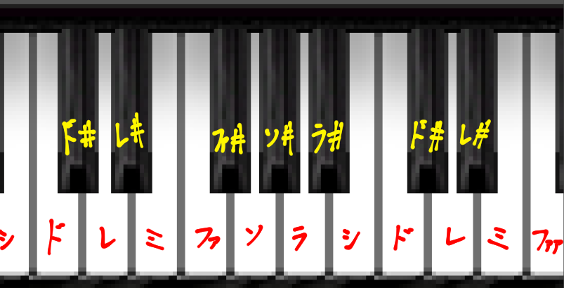
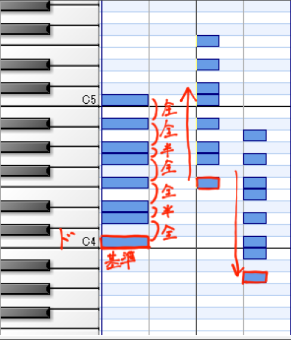
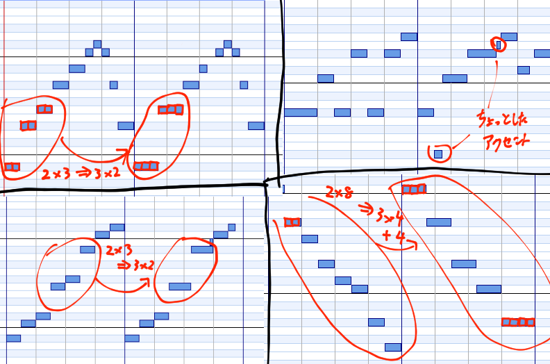

東方から学ぼう！と、いいつつあまり東方から学んでないかもしれない記事です。
若干タイトル詐欺申し訳ない・・・
画像、動画全て合わせると14MBあります。
みなさんこんにちは。一回生のれふそんというものです。
TwitterID @kou114zで１日１絵をしている、本業がDTMだと思ってたけど魂魄妖夢を描きたすぎてお絵かきを優先しちゃってる人です。
ここでは、東方Projectというものに影響されすぎてしまった人が、作曲に使えるかもしれないことを適当に書いていきたいと思います。
音楽理論全く分からんって人にも分かるように書きました
なぜなら、私が音楽理論を知らないからです（）
あわよくばこれをDTM班の講座にも使えるようにしたい（）
電気回路のテストがヤバイので大急ぎで作ってます。許してください。
あとネ管長には大量の動画や画像で迷惑をかけます。ごめんなさい。
東方興味ねえって人は前半だけ読んであとはスルーしてください。前半は興味なくても読めるはず。
ここで一言。
DTMはＰＣさえあれば無料で始められます！！やりましょう！！
はじめに、こんな記事を書いておいてなんですが、私は音楽理論を能動的に学んだことはありません。
でも、曲が作れています。
つまり、音楽理論は勉強しなくても、何とかなる！！（いらないという訳ではない）
しかし、それにしても、いざDAW（作曲用のソフト）を開いても、特に初めてだと、マジで何もできません。
なんなら、今でもなんも出来ない。
じゃあ何をすればいいのか？
DTMにおいて最初にするべきことは・・・耳コピです。そうです。耳コピです。
耳コピとは……既存の音楽を聴いて、そのメロディやらなんやらを聞いたまま打ち込んで同じような曲を作ること……
そんなことして何の意味があるの！って思う人（あんまりいないと思いますが）は、絵だったら模写、数学だったら過去問を解くみたいなもんだと思えばいいです。（というかそれそのもの）
耳コピをすることで自然と曲の構成が分かってきます。これはマジです。
ここからは東方厨の囁きです。
私はＤＴＭを始めたころ、東方妖々夢、東方永夜抄というゲームの曲をほぼ全て耳コピしました。
今聞くと恥ずかしくなるほど下手くそですが。
１作品で大体タイトル１、道中７、ボス７曲、なのでつまり全部で３０曲くらいです。
それ以降も（今も）ちょくちょく東方Project系のゲーム音楽を耳コピしています。
東方ＢＧＭの耳コピはとても理にかなっていると思います。メリットをあげるならば、
・メロディ、コード進行がはっきりしているものが多い。
・色々な人が耳コピしているのでネットで検索すれば「答え合わせ」ができる（これは確か綿菓子さん（元ソフメ部長）もいつか言っていました。多分。）
・上手くいけば「東方アレンジ」として世に出せる（世界は東方アレンジを求めている）
・曲数が多い
などです。以上。
重要：
ここで行う、上達のための耳コピは、そっくりそのまま再現することではありません！
曲の構造やルールを覚えるためのものです。
最初はピアノだけで打ち込んだり、分からない・聞き取れない所は誤魔化したり放置したりしましょう。
あまりにも適当にやらなければ、どちらかというと数をこなしたほうが良いと思います。質より量です。
「東方紅魔郷」の耳コピはやめよう！若干ピッチがズレているからやりにくいぞ！
音楽理論は全て網羅しようとすると果てしない（と思う）のですが、基本中の基本は理解したほうがいいです。
ところで、
「ドレミファソラシド」
とよく言いますよね。でも、実際にピアノを見てみると、
ド、ド#、レ、レ#・・・となっています。つまりドから次のドまでに、１２回音程を上げる必要があるのです。
しかし、この１２種すべてを使って曲を作ると、なんかヤバイ曲になります。
すなわち、曲一曲の中には使って良い/使ってはいけない音があるわけです。具体的には、
一番左の棒（音程）の群を見てください。
一番下の音程（ド）を基準にしたときの、使ってよい音程を次のドまで上に重ねています。
音程を一つ上げるのを「半音上げる」、二つ上げるのを「全音上げる」として、「全半全全半全全」で覚えましょう。
また、右の二つのように丸ごと上下にずらすことができます。
曲に合うようにずらしてみると、ほぼすべての曲がこの音程しか使われていないことが分かります。例えば、
（音量に注意）
（原曲：プレインエイジア 東方永夜抄より）
この赤色の音程、マジで意味分かりませんよね？適当に打ち込んでるんじゃないかとも思えてきます。
でもこれ、使ってはいけない音を綺麗に避けているんですね。
「使って良い音」を青い棒ですべて隠すと、こうなります。
（４小節ごとに紅い音程がいくつか飛び出ているのは「臨時記号」というまためんどくさい音楽理論です。初めは使わなくても良いヤツなので無視してね☆）
殆ど隠れました。この青い棒の下で、赤い音程は滅茶苦茶に上下しています。
また、この曲は途中で「転調」をしているので、それに合わせて「使って良い音」も下にずらしています。
この「使って良い音」を意識できるようになると、だんだん良い曲が作れるようになっていきます多分。
ちなみにこれは「短調」で、「長調」は「全全半全全全半」です。
短調は暗め、長調は明るめの曲と言われていますが、
エモい曲は大体短調！
なので、短調で曲を作りましょう！（）
メインメロディ。
曲の中で、一番目立つだろう音です。
カラオケで歌うのはこの音ですし、歌詞のないインスト曲でも鼻歌を歌う時はこれを歌うことでしょう。
ここでメロディの一例を。
早押しクイズが得意でＤＴＭ歴１秒のA君がこういうメロディを作りました。
良いメロディですね！！！
ではこのA君のメロディを魔改造していこうと思います。
よくありがちなこととして、「メインメロディが適切な小節で繰り返してない」ことがあります。
メロディの一連のフレーズをリセットし、繰り返しましょう。4,8小節あたりで区切ると良いです。
今回は８小節を１セットになるようにします。
また、メロディを「使って良い音」だけにします。
まだ全然良い感じのメロディーになってないので、
さらに、整えていきます。ここからは耳コピを沢山した人ほど上手くいきます。
良いメロかと言われると微妙なところですが、なんとか聴けるレベルまでになりました。
ここが出来るかどうかに、耳コピの経験が関わってくるわけですね。
最後に、
こんな感じで修正するとエモくなる・・・かも？
また、適当なコード進行をつけます。（コードに関して詳しくは、下に。）
まだまだ改善の余地ありなのですが、
最初のよりはましになったかなといった感じです。
コードに関して詳しくは、下に。
DTM始めたての人は、コード進行に悩みがちです。
ですが、
最初は深く考えないほうが良い。
コードは他の曲からパクっても何の問題もありませんので、パクりまくりましょう。
ということで、例とともによく使う万能コードを紹介。
なんか使えそうなコード進行集
名前は、勝手に私が呼んでいるだけなので正式名称ではないです。正式名称が存在するかどうかは知りません。
すべて短調です。
（原曲：おてんば恋娘 東方紅魔郷より）
コード進行はまだ沢山あるので、慣れてきたら色々試しましょう。
もう一度言いますが、コード進行に著作権はありません。よって好きな曲からパクり放題なのです！
以下に、コードの打ち込み方（の、一例）を書いておきます。
まず、こういうメロディがあるとします。
これは原曲があるので、コードもそっくりそのまま耳コピします。
オリジナルの時は他の曲をパクりましょう（）
コードの主成分であるルート音を打ち込みます。耳コピするときは大体この音が聴こえてきます。
（この曲、チルノのパーフェクトなんたらで有名ですが、原曲は全く雰囲気が違います）
次に、音を重ねていき、「コード進行」っぽくします。
基本は「７つ上」と「３つ上or４つ上（片方は違和感があるのでわかります）」に音を追加しましょう。
＊「臨時記号」によってコードのルート音が「使って良い音」から外れている時は、「別のコードに似せる」と良いかもしれないです。
何度も聞いて、違和感が無くなるようにしましょう。耳コピ時にここで積んだら、一旦無視してルート音だけでもいいです。
東方の曲は、特徴的なメロディを何度も繰り返すことで耳に残りやすくなっています。
「なんか東方で流れてそう」と思わせる曲は、特徴を捉えれば意外と簡単に作れます。
例えば、ZUNpet。
東方原作者であるZUN氏はよく、とあるトランペットを使います。(SD-90というアナログシンセの「Romantic Tp」というやつです)
それらを使うと、なんか聞いたことあるトランペットだな〜となります。
あとはドラムの音源を寄せてみたり、特徴なら色々あると思います。
しかし。音色を似せるだけではダメなのです。
音色ももちろん大事ですが、他にも大事なことがある。
（まあ音源が確保できないので、ほかで補うしかないというのもあるというかそれが全て（ｒｙ）
①コード進行
東方原曲は軽く500曲を超えていると思うのですが、ほぼ全てが短調です。
また、曲を聴いていると、あーこれよく使われてるな、というコード進行が分かります。
特に上で紹介した、上昇進行。音楽理論の観点から、456進行？とも呼ばれているようですが、これが本当に多いです。使いましょう。
②ピアノ発狂
東方ＢＧＭではしばしばピアノがあらぶります。これを入れると東方っぽくなります。
コンプ等かけて力強いピアノを滅茶苦茶に鳴らすと東方っぽいです。
また、「ちょっとしたアクセント」を入れると良い感じになります。
こういうのです。
③ドラムパターン
これ使っとけば間違いねえっていうパターンがあるのですが、言葉で表現しづらい（記事書いてる意味ねえ）
大体こんな感じです。裏拍にスネアを入れればそれっぽくなります。
④メロディの特徴
美しくメロディアスな旋律を、とにかく滅茶苦茶繰り返します。これは「最初そうでもなかったけど聞いてたらハマってた」、所謂スルメ曲という現象の理由かなと。
何度も何度も繰り返すのは、ダンスミュージック系でも言えますね。
３連符を使うとなんかそれっぽくなる気がします。
⑤例のフレーズ
このフレーズ、万能すぎるのでどこにでも入ります。
東方アレンジで困った時、適当にこれをいれておくと、何も考えてないのに「東方分かってる」風になるのでとても楽です。
３拍子なのですが、４拍子の曲にもバンバン入りますし、どんなコードにも合います。
てことで集めてみました。
「例のフレーズ」がどこで流れているかに注意して聞いてみよう。
東方Projectタイトル曲（紅～星）
このように、ただ一つのフレーズでも色々な雰囲気が出せることが分かります。
画像・動画を作るときに使ったソフトは
「Domino」というMIDI編集ソフト（DAWみたいなもの）と、
「AviUtl」という動画編集ソフトです。
いずれも無料です。
DTMは課金ゲーです。DTMは課金ゲーなのですが（大事なことなので二回）、始めるのは無料でできます。始めましょう！！
（ここで「CLIP STUDIO PAINT PRO」\5000も使っていた事に気づく）
ということで電気回路のテストがヤバイ（二回目）ので大急ぎで提出します。
では最後に一言。
魂魄妖夢はかわいい。